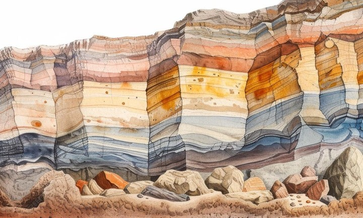
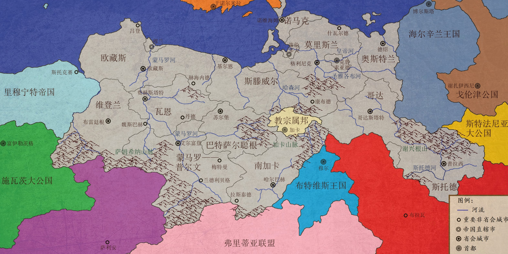
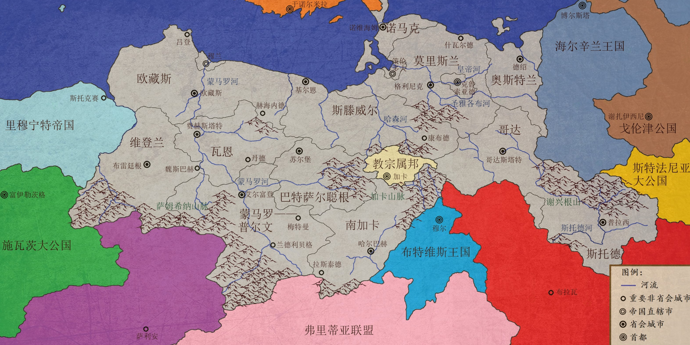

世界大观
同样，大地的一切出产也都受人类支配。我们利用平原，我们利用山区，河流是我们的，湖泊是我们的，我们播种五谷，我们栽植树木，我们通过引水灌溉让土地肥沃，我们拦截、疏导、改变河流。简言之，凭借我们的双手，我们试图在自然之中创造出另一个自然。
一个与地球有诸多相似之处，却也独具特色的奇幻世界。
科洛姆波是苍茫银河中阿塔玛纳星系的第四颗行星，被两颗卫星环绕。
科洛姆波在银河边缘享受了数十亿年的宁静，直至地球殖民者于八万年前到来。

物理属性
科洛姆波的各项参数与地球出乎意料地相似——这既是演化的鬼斧神工，也是有意改造的结果。
科洛姆波总体而言适于智慧生物生存发展，但其间危机险恶亦不可胜数。
七片大陆和海洋的简介。目前已知的多数故事主要发生在布里安洲。
 
